1Install the app
- On your Android phone, open djtechinnovation.in/app and download the DJ Irrigation app.
- Tap the downloaded file and tap Install.
- If the phone asks, allow "Install unknown apps" for your browser or WhatsApp.
- Open the app. Choose English or தமிழ் at the top.
2Link your phone (first time)
The first phone that links to the box becomes the Admin (owner). Nobody can control your motor without scanning the QR on your box.
- Tap I am the owner.
- On the controller screen open Settings → Pairing. A QR code appears.
- Point your phone camera at the QR.
Camera not working? Type the Controller ID and the Pairing code shown under the QR, and tap Continue. - Type your name, email, mobile number and farm location, then tap Become owner.
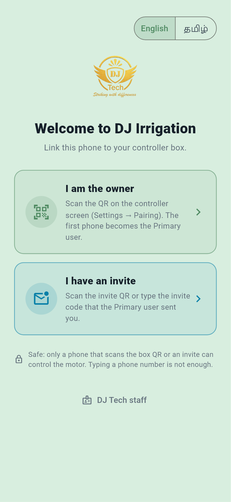
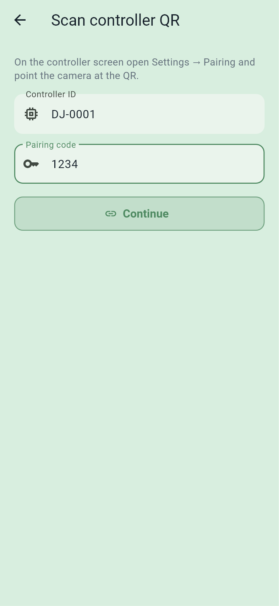
3Turn on alerts
Right after linking, the app shows a page with a big bell.
- Tap Turn on alerts.
- Android asks "Allow DJ Irrigation to send notifications?" – tap Allow.
- Next it asks to run in the background – tap Allow again. (Oppo, Vivo, Realme and Xiaomi phones stop apps to save battery. Then alerts come late.)
You then get an alert for a motor trip, power failure, rain, timer start/end and controller offline – even when the phone is locked and the app is closed.
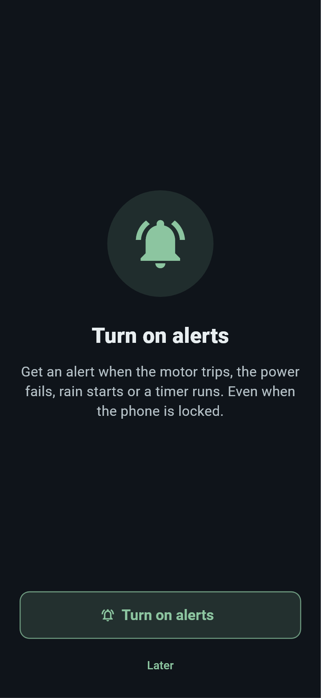
4Home page
| Part | What it shows |
|---|---|
| Top | Greeting, your name, farm name and controller ID. |
| Dots | Server and Controller: green = connected. Auto = timers run the motor. Admin = your role. |
| Motor | RUNNING (green) or STOPPED (red), with current (A) and voltage (V). |
| Emergency stop | Red button – stops the motor and closes the valves at once. |
| Field & Valves | Picture of your field. Blue = water flowing. V1–V10 show ON / OFF. |
| Power | Solar panel and battery voltage and current. |
| Motor protection | OK, or the reason of a trip (shown in red). |
| Rainfall | Rain now and today's rain in mm. |
| Next timer | The next time the motor starts. Tap to open Timers. |
| Wi-Fi | The controller's internet and signal strength. |
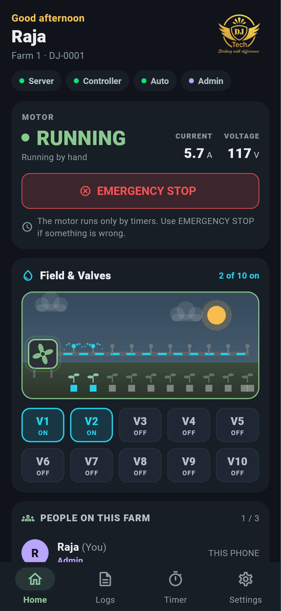
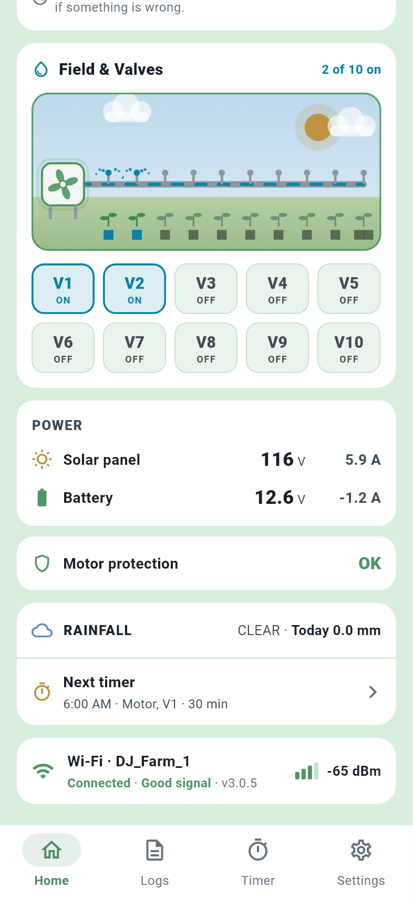
5Timers
- Tap Timer at the bottom, then + Add timer.
- On time: tap the pencil and pick the start time.
- Duration: choose hours and minutes. The app shows "Until …".
- Start the motor: keep it on. Turn it off only when water flows by gravity or from a tank.
- Choose the valves (V1–V10) to open.
- Tap Save timer.
Each timer has a switch to turn it on or off, and a ⋮ menu to edit or delete it. Timers repeat every day.
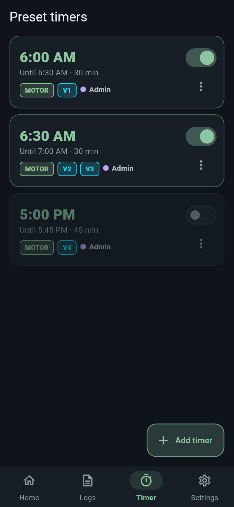
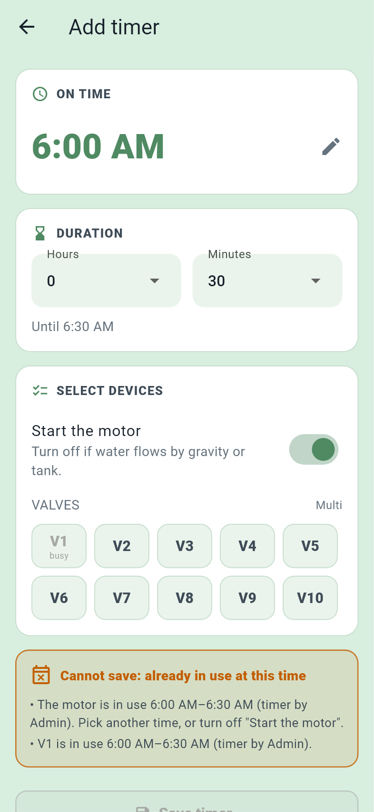
6Logs
Tap Logs at the bottom. You see everything that happened, newest first: motor start and stop, valves, timers, trips, rain, settings changes, who did it and when.
Use the logs to check, for example, "Did the 6:00 AM timer run today?"
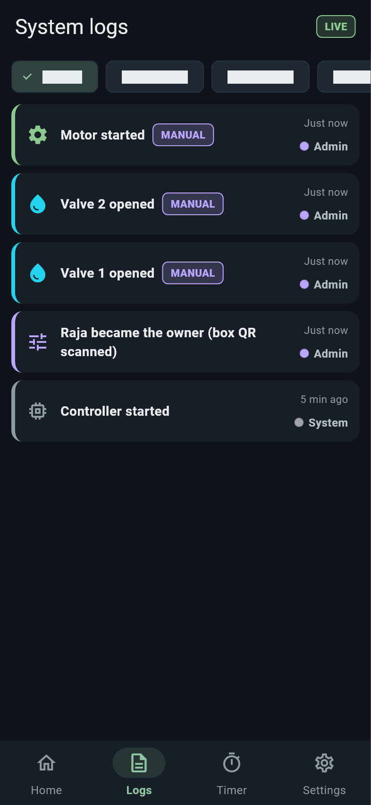
7Settings and PIN
- Tap Settings. Type the PIN and tap Unlock.
- The first PIN is 8888. Change it at once (tap Change in the orange box), so children or others cannot change settings.
| In Settings | Use |
|---|---|
| Account | Your details and your Customer ID (DJC-…). Tell this ID when you call DJ Tech. |
| Language / Appearance | English or Tamil; Light or Dark screen. |
| Motor protection | Trip limits (section 8). |
| Notifications / Permissions | Which alerts you get and how (section 9). |
| Wi-Fi | Connect the controller to Wi-Fi or a LAN cable. |
| Valve control | Single = one valve at a time. Multi = many together. |
| User management | Invite family members (section 10). |
| DJ Tech service access | When a technician may work from far away (section 11). |
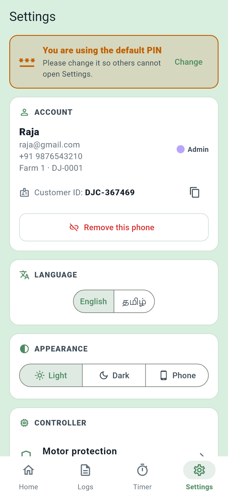
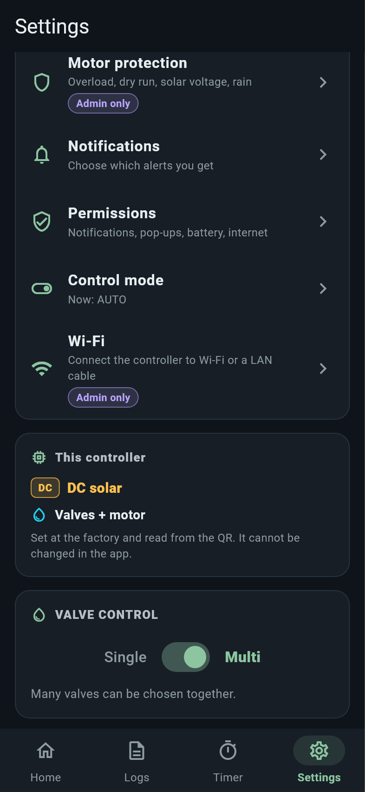
8Motor protection
The controller stops the motor by itself to protect it:
| Protection | Stops the motor when… |
|---|---|
| Motor overload | the current is too high for longer than the delay. |
| Dry run | the current is too low (no water in the well) for longer than the delay. |
| Solar low | the solar voltage is too low. |
| Rain | it rains (so the field is not watered twice). |
Use − and + to change a limit, then tap Save all settings.
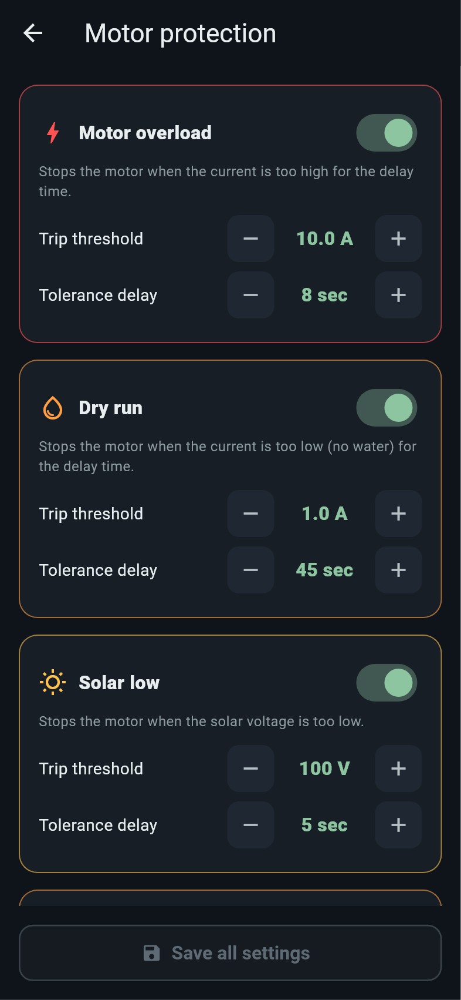
9Alert settings
Settings → Notifications. Alerts reach you in 3 ways. Each has its own switch, tone and Vibrate switch:
- While the app is open – a banner with a sound.
- When the screen is off – the screen turns on and the alert shows on the lock screen.
- Over other apps – a pop-up on top of WhatsApp, YouTube and others.
Tap Test sound or Test in 10 s (then lock the phone) to check.
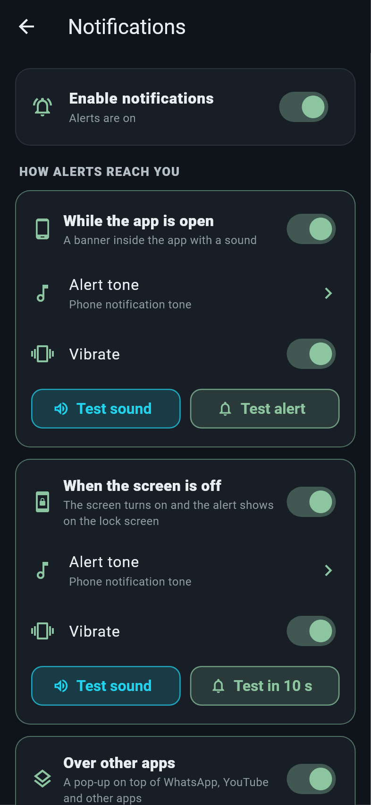
10Add family members
Up to 3 phones per controller: the Admin and 2 users. Only the Admin can invite or remove.
- Admin: Settings → User management → Invite user.
- Type the person's name and email (mobile number is optional) → Make invite.
- A QR and an invite code appear. Show the QR, or tap Share invite to send the code on WhatsApp. It works once, for 10 minutes.
- New user: install the app → I have an invite → scan the QR or type the code.
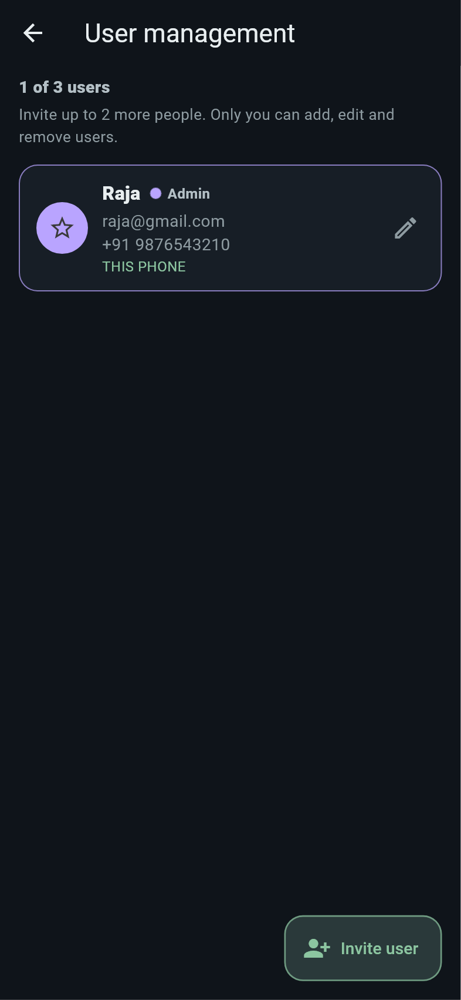
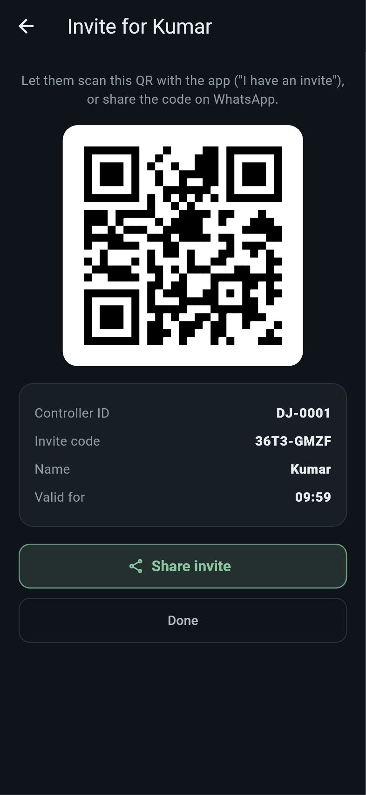
11DJ Tech service
A DJ Tech technician can test your motor and valves (service mode). At the farm he scans a code on the controller screen. From far away, it depends on your choice in Settings → DJ Tech service access:
| Always allowed | Service can start any time. You get an alert when it starts and ends. |
| Ask me first | A card with Allow / Deny appears on Home. Answer within 15 minutes. |
| Off | Only service at the farm. |
During service, the app shows "SERVICE MODE ACTIVATED" and is locked. Timers pause and run again when service ends. Everything is saved in the logs.
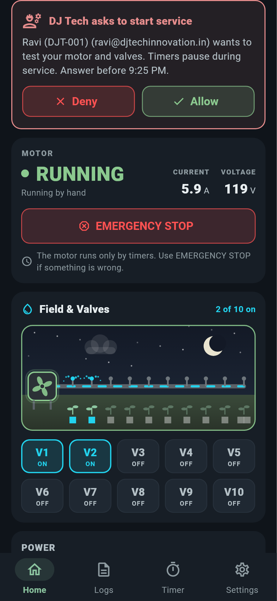
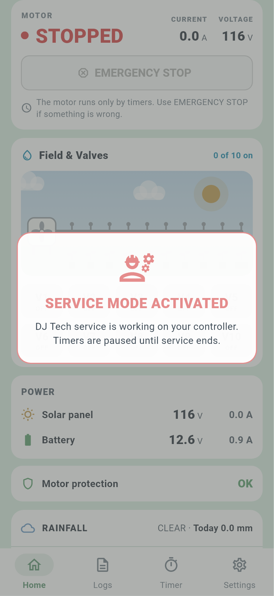
12Emergency stop
If something is wrong (pipe burst, wrong valve, people in the field), tap the red EMERGENCY STOP on Home and confirm.
The controller stops the motor first, waits 5 seconds, then closes the valves – the safe order for your pipes. The next timer runs as normal.
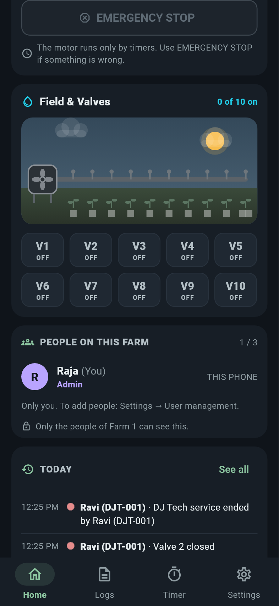
13Problems and answers
| Problem | What to do |
|---|---|
| No alerts | Tap the red strip on Home, or Settings → Permissions. Allow notifications and "run in background". Check Silent / Do Not Disturb. |
| "Controller" dot is not green | The box has no internet. Check power at the farm and the Wi-Fi router. Settings → Wi-Fi to change the network. |
| Motor stopped by itself | Look at Home → Motor protection and the Logs. They show the reason (overload, dry run, solar low, rain). |
| Forgot the Settings PIN | Call DJ Tech support with your Customer ID. |
| New phone | On the old phone, ask the Admin to send a new invite. If you are the Admin and lost the phone, call DJ Tech. |
| App is old | The app shows "New version" – download it again from djtechinnovation.in/app and install over the old one. Your data stays. |
1ஆப்பை நிறுவுதல்
- உங்கள் Android போனில் djtechinnovation.in/app திறந்து DJ Irrigation ஆப்பைப் பதிவிறக்கவும்.
- பதிவிறக்கிய கோப்பைத் தட்டி Install தட்டவும்.
- போன் கேட்டால், உங்கள் பிரவுசர் அல்லது WhatsApp-க்கு "Install unknown apps" அனுமதிக்கவும்.
- ஆப்பைத் திறந்து மேலே தமிழ் தேர்வு செய்யவும்.
2போனை இணைத்தல் (முதல் முறை)
பெட்டியுடன் முதலில் இணையும் போன் நிர்வாகி (Admin) ஆகும். பெட்டியில் உள்ள QR-ஐ ஸ்கேன் செய்யாமல் யாரும் உங்கள் மோட்டாரை இயக்க முடியாது.
- நான் உரிமையாளர் தட்டவும்.
- கண்ட்ரோலர் திரையில் Settings → Pairing திறக்கவும். QR தோன்றும்.
- போன் கேமராவை QR-ஐ நோக்கிப் பிடிக்கவும்.
கேமரா வேலை செய்யவில்லையா? QR-க்கு கீழே உள்ள Controller ID மற்றும் Pairing code உள்ளிட்டு தொடர் தட்டவும். - உங்கள் பெயர், மின்னஞ்சல், மொபைல் எண், பண்ணை இடம் உள்ளிட்டு உரிமையாளர் ஆகும் பொத்தானைத் தட்டவும்.
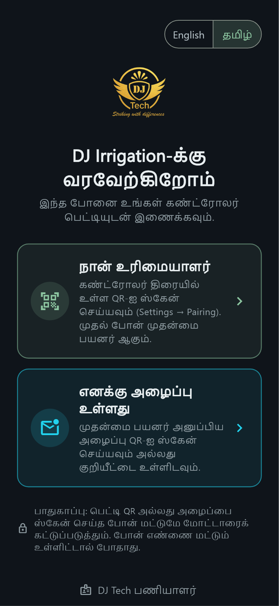
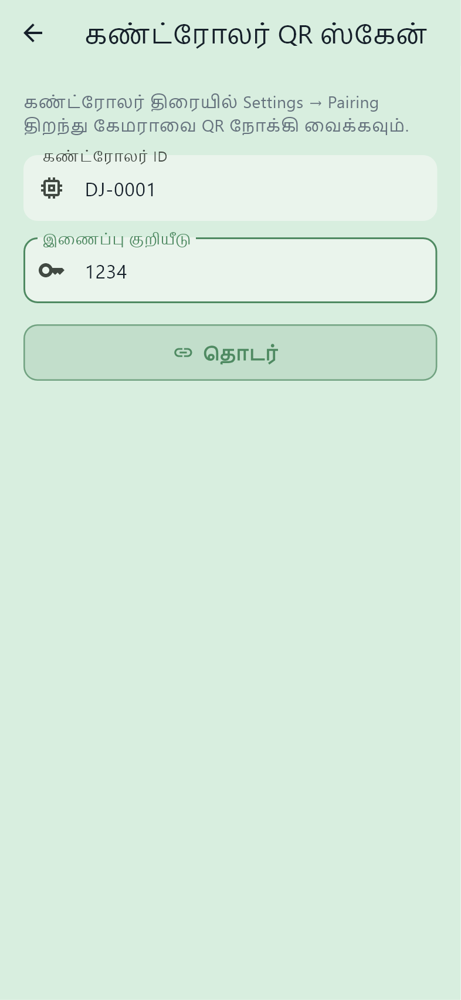
3எச்சரிக்கைகளை இயக்குதல்
இணைத்தவுடன், பெரிய மணி படத்துடன் ஒரு பக்கம் தோன்றும்.
- எச்சரிக்கைகளை இயக்கு தட்டவும்.
- Android "அறிவிப்புகளை அனுமதிக்கவா?" என்று கேட்கும் – Allow தட்டவும்.
- அடுத்து பின்னணியில் இயங்க அனுமதி கேட்கும் – மீண்டும் Allow தட்டவும். (Oppo, Vivo, Realme, Xiaomi போன்கள் பேட்டரி சேமிக்க ஆப்களை நிறுத்தும். அப்போது எச்சரிக்கை தாமதமாகும்.)
பிறகு மோட்டார் டிரிப், மின்தடை, மழை, டைமர் தொடக்கம்/முடிவு, கண்ட்ரோலர் ஆஃப்லைன் ஆகியவற்றுக்கு எச்சரிக்கை வரும் – போன் பூட்டியிருந்தாலும், ஆப் மூடியிருந்தாலும்.
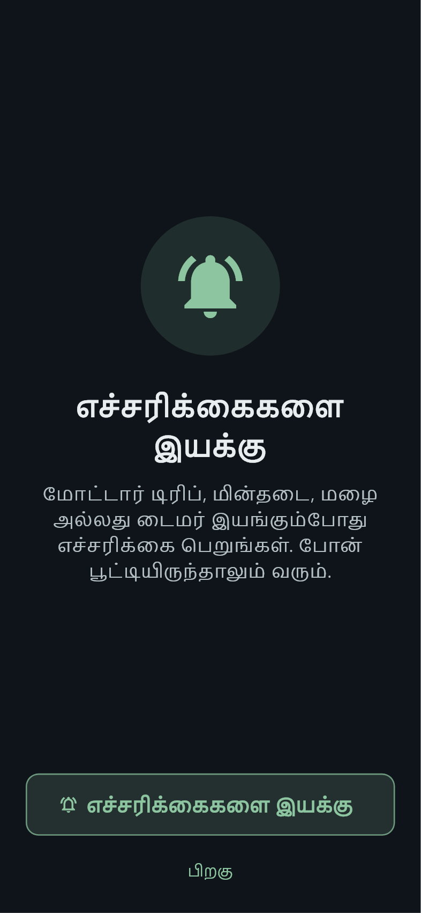
4முகப்பு பக்கம்
| பகுதி | என்ன காட்டும் |
|---|---|
| மேலே | வணக்கம், உங்கள் பெயர், பண்ணை பெயர், கண்ட்ரோலர் ID. |
| புள்ளிகள் | சர்வர், கண்ட்ரோலர்: பச்சை = இணைப்பு உள்ளது. ஆட்டோ = டைமர்கள் மோட்டாரை இயக்கும். நிர்வாகி = உங்கள் பங்கு. |
| மோட்டார் | இயங்குகிறது (பச்சை) அல்லது நின்றது (சிவப்பு), கரண்ட் (A), வோல்டேஜ் (V). |
| அவசர நிறுத்தம் | சிவப்பு பொத்தான் – மோட்டாரை நிறுத்தி வால்வுகளை உடனே மூடும். |
| வயல் & வால்வுகள் | உங்கள் வயல் படம். நீலம் = தண்ணீர் ஓடுகிறது. V1–V10 ஆன் / ஆஃப். |
| மின்சாரம் | சோலார் பேனல், பேட்டரி வோல்டேஜ் மற்றும் கரண்ட். |
| மோட்டார் பாதுகாப்பு | OK, அல்லது டிரிப் காரணம் (சிவப்பில்). |
| மழை | இப்போது மழை, இன்றைய மழை (mm). |
| அடுத்த டைமர் | மோட்டார் அடுத்து தொடங்கும் நேரம். தட்டினால் டைமர்கள் திறக்கும். |
| Wi-Fi | கண்ட்ரோலரின் இணையம் மற்றும் சிக்னல். |
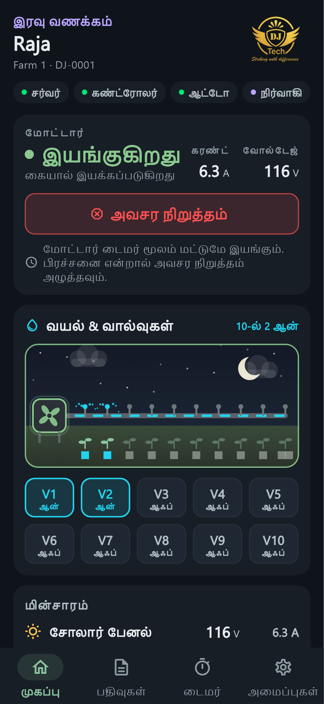
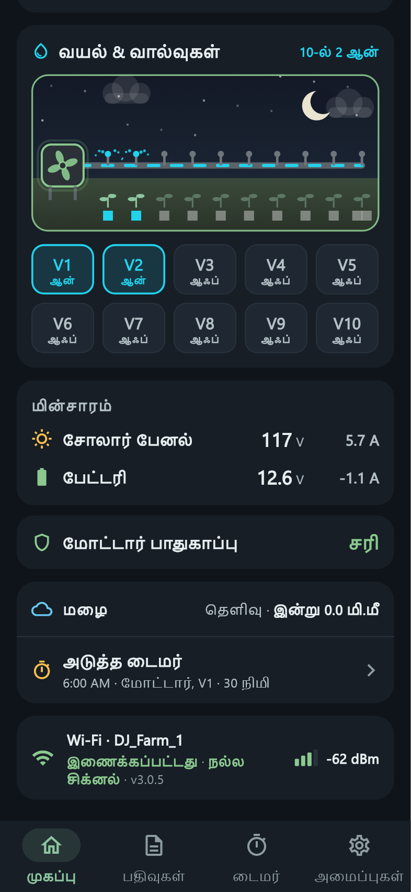
5டைமர்கள்
- கீழே டைமர் தட்டி, + டைமர் சேர் தட்டவும்.
- தொடக்க நேரம்: பென்சிலைத் தட்டி நேரம் தேர்வு செய்யவும்.
- கால அளவு: மணி, நிமிடம் தேர்வு செய்யவும். "… வரை" என்று காட்டும்.
- மோட்டாரைத் தொடங்கு: இயக்கத்தில் வைக்கவும். தொட்டி அல்லது புவியீர்ப்பு மூலம் தண்ணீர் வந்தால் மட்டும் நிறுத்தவும்.
- திறக்க வேண்டிய வால்வுகளை (V1–V10) தேர்வு செய்யவும்.
- சேமி பொத்தானைத் தட்டவும்.
ஒவ்வொரு டைமருக்கும் ஆன்/ஆஃப் சுவிட்ச் மற்றும் திருத்த/நீக்க ⋮ மெனு உண்டு. டைமர்கள் தினமும் இயங்கும்.
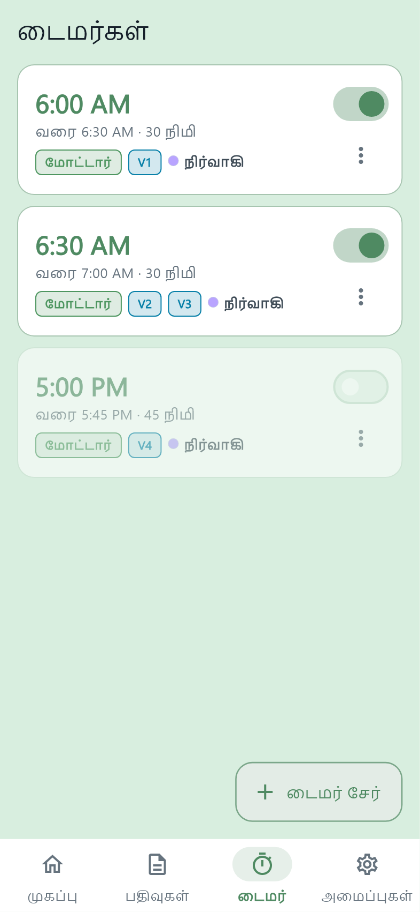
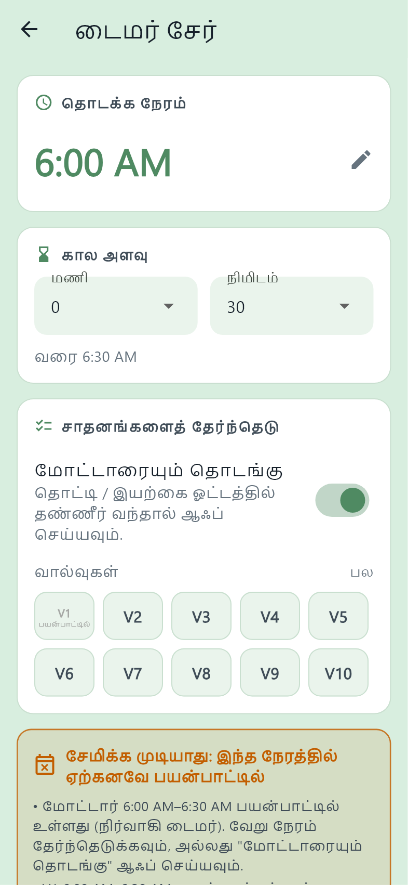
6பதிவுகள்
கீழே பதிவுகள் தட்டவும். நடந்த அனைத்தும் புதியது முதலில் தெரியும்: மோட்டார் தொடக்கம்/நிறுத்தம், வால்வுகள், டைமர்கள், டிரிப், மழை, அமைப்பு மாற்றங்கள், யார், எப்போது.
உதாரணம்: "இன்று காலை 6:00 டைமர் இயங்கியதா?" என்று பார்க்கலாம்.
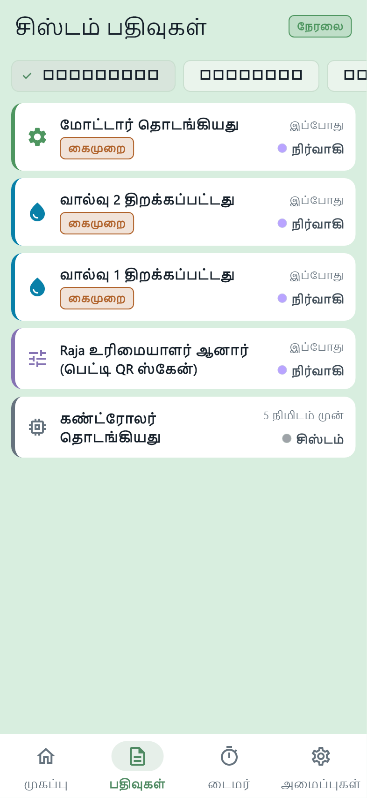
7அமைப்புகள் மற்றும் PIN
- அமைப்புகள் தட்டி PIN உள்ளிட்டு திற தட்டவும்.
- முதல் PIN 8888. உடனே மாற்றவும் (ஆரஞ்சு பெட்டியில் மாற்று தட்டவும்), குழந்தைகள் அல்லது மற்றவர்கள் அமைப்புகளை மாற்ற முடியாது.
| அமைப்புகளில் | பயன் |
|---|---|
| கணக்கு | உங்கள் விவரங்கள் மற்றும் வாடிக்கையாளர் ID (DJC-…). DJ Tech-ஐ அழைக்கும்போது இதைச் சொல்லவும். |
| மொழி / தோற்றம் | ஆங்கிலம் அல்லது தமிழ்; வெளிச்சம் அல்லது இருண்ட திரை. |
| மோட்டார் பாதுகாப்பு | டிரிப் வரம்புகள் (பகுதி 8). |
| அறிவிப்புகள் / அனுமதிகள் | எந்த எச்சரிக்கைகள், எப்படி (பகுதி 9). |
| Wi-Fi | கண்ட்ரோலரை Wi-Fi அல்லது LAN கேபிளுடன் இணைக்க. |
| வால்வு கட்டுப்பாடு | ஒற்றை = ஒரு நேரத்தில் ஒரு வால்வு. பல = பல வால்வுகள் ஒன்றாக. |
| பயனர் மேலாண்மை | குடும்பத்தினரை அழைக்க (பகுதி 10). |
| DJ Tech சர்வீஸ் அனுமதி | டெக்னீஷியன் தொலைவிலிருந்து எப்போது வேலை செய்யலாம் (பகுதி 11). |
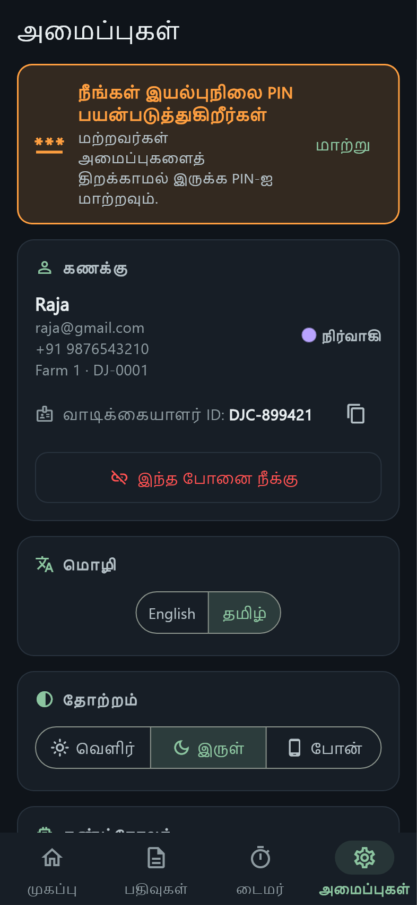
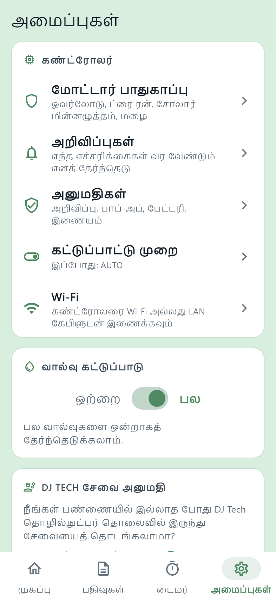
8மோட்டார் பாதுகாப்பு
மோட்டாரைப் பாதுகாக்க கண்ட்ரோலர் தானாகவே நிறுத்தும்:
| பாதுகாப்பு | எப்போது நிறுத்தும் |
|---|---|
| ஓவர்லோடு | கரண்ட் தாமத நேரத்தை விட அதிக நேரம் அதிகமாக இருந்தால். |
| ட்ரை ரன் | கரண்ட் குறைவாக (கிணற்றில் தண்ணீர் இல்லை) இருந்தால். |
| சோலார் குறைவு | சோலார் வோல்டேஜ் மிகக் குறைவாக இருந்தால். |
| மழை | மழை பெய்தால் (வயலுக்கு இருமுறை தண்ணீர் வேண்டாம்). |
−, + மூலம் வரம்பை மாற்றி, அனைத்தையும் சேமி பொத்தானைத் தட்டவும்.

9எச்சரிக்கை அமைப்புகள்
அமைப்புகள் → அறிவிப்புகள். எச்சரிக்கை 3 வழிகளில் வரும். ஒவ்வொன்றுக்கும் தனி சுவிட்ச், ஒலி, அதிர்வு சுவிட்ச் உண்டு:
- ஆப் திறந்திருக்கும்போது – ஒலியுடன் பேனர்.
- திரை அணைந்திருக்கும்போது – திரை ஒளிர்ந்து பூட்டுத் திரையில் எச்சரிக்கை.
- மற்ற ஆப்களின் மேல் – WhatsApp, YouTube மேல் பாப்-அப்.
சோதிக்க ஒலி சோதனை அல்லது 10 வினாடியில் சோதனை தட்டவும் (பிறகு போனைப் பூட்டவும்).
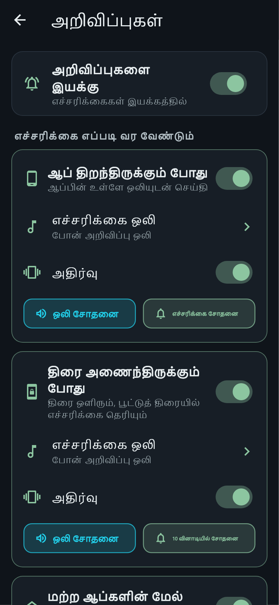
10குடும்பத்தினரைச் சேர்த்தல்
ஒரு கண்ட்ரோலருக்கு 3 போன்கள் வரை: நிர்வாகி + 2 பயனர்கள். நிர்வாகி மட்டுமே அழைக்கவோ நீக்கவோ முடியும்.
- நிர்வாகி: அமைப்புகள் → பயனர் மேலாண்மை → பயனரை அழை.
- அவரது பெயர், மின்னஞ்சல் உள்ளிடவும் (மொபைல் எண் விருப்பம்) → அழைப்பை உருவாக்கவும்.
- QR மற்றும் அழைப்புக் குறியீடு தோன்றும். QR-ஐக் காட்டவும், அல்லது பகிர் தட்டி WhatsApp-ல் அனுப்பவும். ஒருமுறை மட்டும், 10 நிமிடம் செல்லும்.
- புதிய பயனர்: ஆப்பை நிறுவி → எனக்கு அழைப்பு உள்ளது → QR ஸ்கேன் அல்லது குறியீடு உள்ளிடவும்.
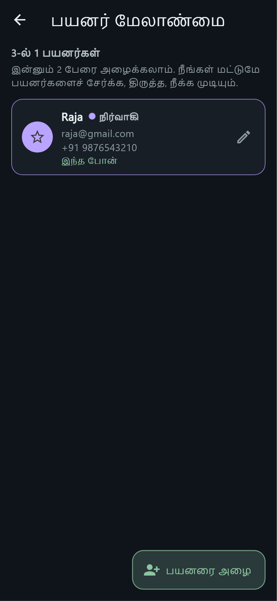
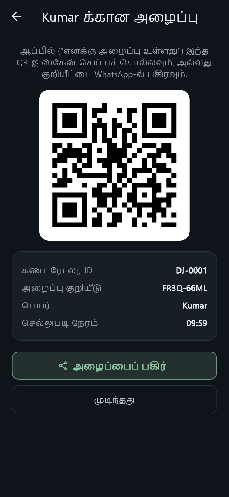
11DJ Tech சர்வீஸ்
DJ Tech டெக்னீஷியன் உங்கள் மோட்டார், வால்வுகளைச் சோதிக்கலாம் (சர்வீஸ் முறை). பண்ணையில் அவர் கண்ட்ரோலர் திரையில் உள்ள குறியீட்டை ஸ்கேன் செய்வார். தொலைவிலிருந்து என்றால், அமைப்புகள் → DJ Tech சர்வீஸ் அனுமதி-ல் உங்கள் தேர்வைப் பொறுத்தது:
| எப்போதும் அனுமதி | எப்போது வேண்டுமானாலும் தொடங்கலாம். தொடக்கம், முடிவில் எச்சரிக்கை வரும். |
| முதலில் என்னிடம் கேள் | முகப்பில் அனுமதி / மறு அட்டை தோன்றும். 15 நிமிடத்துக்குள் பதிலளிக்கவும். |
| நிறுத்தம் | பண்ணையில் மட்டும் சர்வீஸ். |
சர்வீஸ் நேரத்தில் ஆப் "சேவை முறை இயக்கப்பட்டது" என்று காட்டி பூட்டப்படும். டைமர்கள் நின்று, சர்வீஸ் முடிந்ததும் மீண்டும் இயங்கும். அனைத்தும் பதிவாகும்.
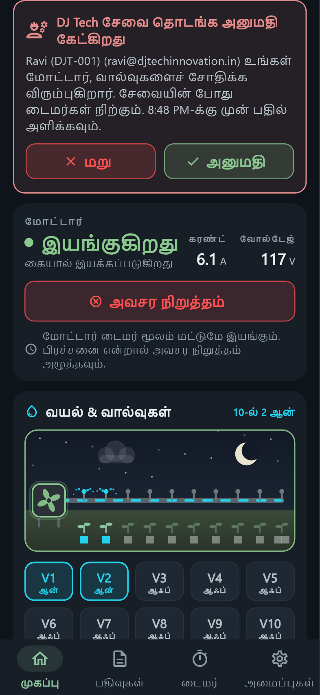
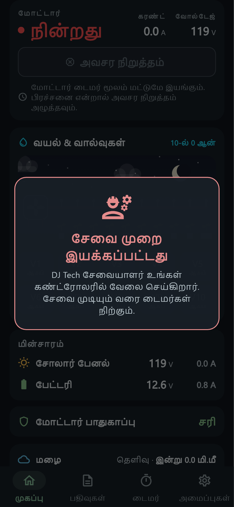
12அவசர நிறுத்தம்
ஏதாவது தவறு என்றால் (குழாய் உடைப்பு, தவறான வால்வு, வயலில் ஆட்கள்), முகப்பில் சிவப்பு அவசர நிறுத்தம் தட்டி உறுதி செய்யவும்.
கண்ட்ரோலர் முதலில் மோட்டாரை நிறுத்தி, 5 வினாடி காத்திருந்து, பிறகு வால்வுகளை மூடும் – உங்கள் குழாய்களுக்குப் பாதுகாப்பான வரிசை. அடுத்த டைமர் வழக்கம்போல் இயங்கும்.
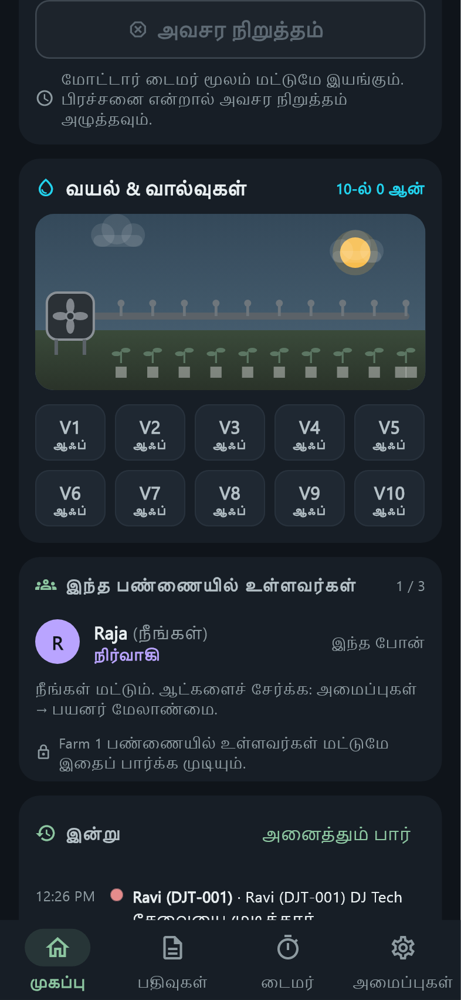
13பிரச்சனைகளும் தீர்வுகளும்
| பிரச்சனை | என்ன செய்வது |
|---|---|
| எச்சரிக்கை வரவில்லை | முகப்பில் சிவப்பு பட்டையைத் தட்டவும், அல்லது அமைப்புகள் → அனுமதிகள். அறிவிப்புகள், "பின்னணியில் இயங்க" அனுமதிக்கவும். Silent / Do Not Disturb சரிபார்க்கவும். |
| "கண்ட்ரோலர்" புள்ளி பச்சையாக இல்லை | பெட்டிக்கு இணையம் இல்லை. பண்ணையில் மின்சாரம், Wi-Fi ரூட்டரைச் சரிபார்க்கவும். நெட்வொர்க் மாற்ற அமைப்புகள் → Wi-Fi. |
| மோட்டார் தானாக நின்றது | முகப்பு → மோட்டார் பாதுகாப்பு மற்றும் பதிவுகளைப் பார்க்கவும். காரணம் தெரியும் (ஓவர்லோடு, ட்ரை ரன், சோலார் குறைவு, மழை). |
| அமைப்புகள் PIN மறந்துவிட்டது | உங்கள் வாடிக்கையாளர் ID உடன் DJ Tech-ஐ அழைக்கவும். |
| புதிய போன் | நிர்வாகியிடம் புதிய அழைப்பு கேட்கவும். நீங்களே நிர்வாகி, போன் தொலைந்தது என்றால் DJ Tech-ஐ அழைக்கவும். |
| ஆப் பழையது | ஆப் "புதிய பதிப்பு" என்று காட்டும் – djtechinnovation.in/app-லிருந்து மீண்டும் பதிவிறக்கி பழையதன் மேல் நிறுவவும். உங்கள் தரவு அப்படியே இருக்கும். |